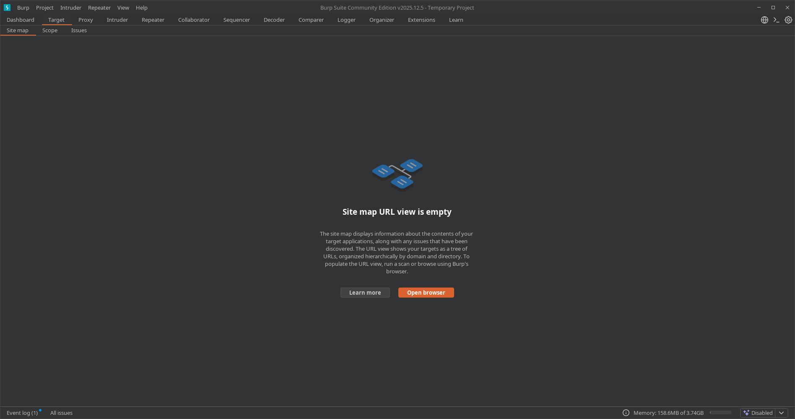
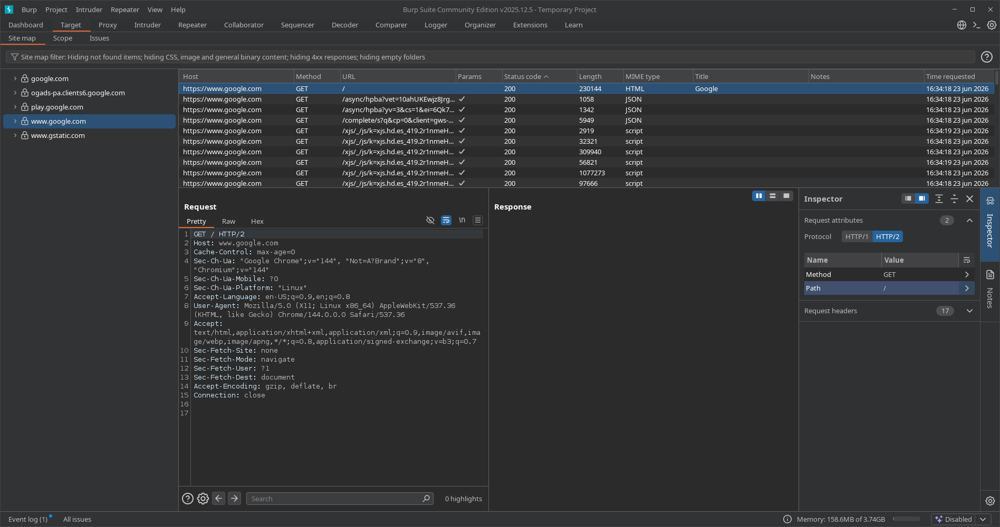
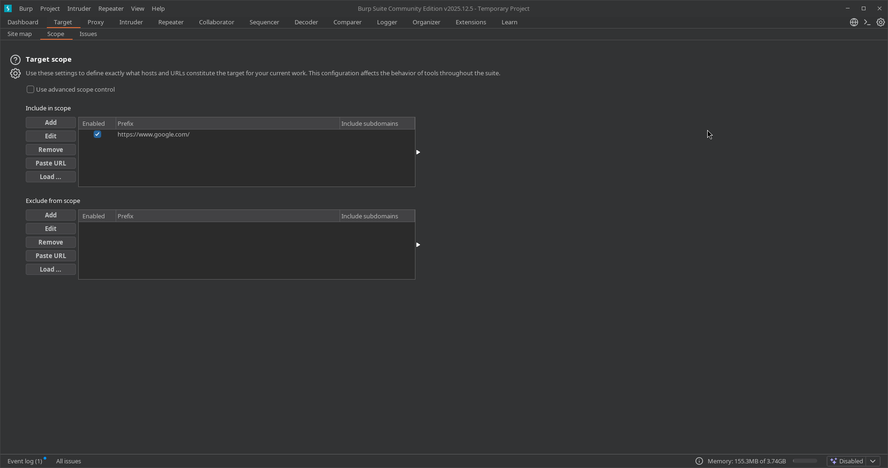
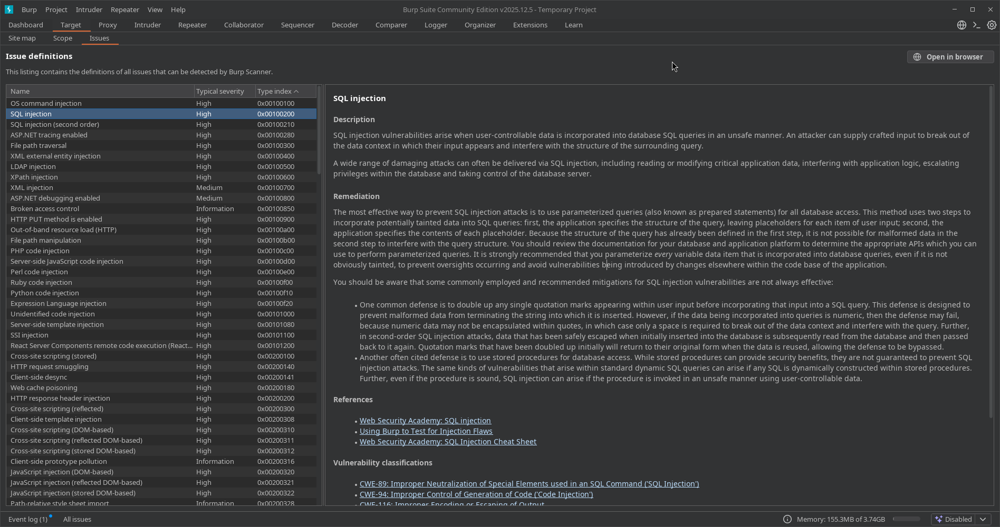

02. Target
📌 Propósito Operativo
La pestaña Target es el punto de partida crítico de cualquier auditoría web. Su función es centralizar el reconocimiento pasivo y activo, permitiendo al auditor estructurar la superficie de ataque del objetivo.
Operativamente nos sirve para tres cosas fundamentales: 1. Delimitar el Scope (Alcance): Restringir las acciones de Burp Suite para que interactúe únicamente con los dominios o IPs autorizados en el contrato de auditoría. 2. Analizar el Site Map (Mapa del Sitio): Visualizar de forma jerárquica la estructura de carpetas, archivos, scripts y endpoints de la aplicación web objetivo. 3. Gestionar y Estudiar Vulnerabilidades (Issues): Consolidar los hallazgos y acceder a la enciclopedia interna de fallos de seguridad para documentar los reportes técnicos.

🗺️ 1. Site Map (Mapa del Sitio)
A medida que el tráfico pasa por el Proxy o se ejecuta una tarea de Crawl, Burp Suite va construyendo un árbol con la estructura de la aplicación.
- Panel Izquierdo (Árbol jerárquico): Muestra los hosts, carpetas y archivos descubiertos. Los elementos en blanco brillante representan recursos que ya han sido visitados/solicitados; los elementos en gris/difuminado son recursos que Burp infiere que existen (enlaces encontrados en el código HTML) pero que aún no han sido cargados.
- Panel Superior Derecho (Lista de Contenido): Desglosa detalladamente cada petición individual realizada al recurso seleccionado (Método GET/POST, URL, Código de Estado HTTP, Extensión, Longitud, etc.).
- Panel Inferior Derecho (Request / Response): Permite inspeccionar a fondo la anatomía de la petición enviada y la respuesta exacta devuelta por el servidor.
🔍 Análisis de Datos en Tiempo Real (Basado en Captura Operativa)
Cuando observamos el flujo de un rastreo dinámico (como el Live passive crawl), la tabla de contenidos recopila metadatos críticos de cada petición. Analizando la estructura de las columnas visibles, podemos extraer la siguiente telemetría clave para auditoría:

A. Identificación de Hosts (Host)
- Propósito: Muestra el dominio o subdominio exacto que procesa la petición.
- Uso en Auditoría: Permite detectar rápidamente conexiones de terceros o fugas de datos hacia dominios externos (como
fonts.gstatic.comoplay.google.com). Esto ayuda al auditor a mapear dependencias de la aplicación que podrían ser vulnerables a ataques de scripts de terceros (Supply Chain Attacks).
B. Métodos HTTP (Method)
- GET: Peticiones de solicitud de recursos. La gran mayoría de consultas iniciales (scripts, imágenes, HTML base como
/warmup.html) utilizan este método. - POST: Envío de datos hacia el servidor. Es crucial monitorear estos métodos durante el reconocimiento, ya que suelen representar formularios de inicio de sesión, endpoints de APIs (
/rpc/...) o envío de telemetría, mapeando los puntos exactos donde buscaremos inyecciones o fallos lógicos más adelante.
C. Códigos de Estado (Status code)
El servidor responde con códigos numéricos que nos indican el éxito o fracaso de la interacción:
* 🟢 200 OK: El recurso existe y se cargó correctamente (archivos JSON, scripts, imágenes).
* 🟡 301 Moved Permanently: Redirección. El servidor fuerza un salto hacia otra ubicación (visto en google.com hacia su subdominio www).
* 🔴 404 Not Found: El recurso no existe en el servidor. Detectar un 404 en elementos indexados (como en /warmup.html) nos da indicios de configuraciones antiguas del servidor o rutas mal mapeadas por la aplicación.
D. Tipos de Contenido (MIME type)
Clasifica la naturaleza del archivo devuelto por el backend: * HTML: Estructura web base. * script / JSON: Lógica del lado del cliente y endpoints de intercambio de datos. Identificar archivos JSON expuestos es prioritario, ya que suelen contener estructuras de APIs explotables. * CSS / woff / PNG / GIF: Recursos estáticos de diseño e imágenes. Generalmente se filtran o ignoran en fases avanzadas de ataque para limpiar el ruido visual en el proxy.
🪵 Telemetría del Task Log & Task Progress (Panel Derecho)
- Site map items added: Indica el número total de nodos indexados que poblarán directamente tu pestaña Target.
- Task log (Feed analítico): Muestra el flujo crudo del motor de Burp. En el log se observa el análisis sintáctico automatizado: "Adding response...", "Adding form...". Burp Suite analiza el código de las respuestas y, si encuentra un formulario HTML (
<form>), lo registra de inmediato para que el auditor sepa qué endpoints aceptan parámetros de entrada.
🛡️ 2. Scope (Alcance del Target) - Control Avanzado
El Scope es el escudo legal y operativo del auditor. Permite definir qué URLs entran en las pruebas y cuáles deben ser ignoradas por las herramientas de automatización de Burp.

- Include in scope (Incluir): Lista de expresiones regulares, IPs o dominios sobre los cuales tenemos permiso de auditoría (ej:
https://www.google.com/). - Exclude from scope (Excluir): Lista de recursos que, aun perteneciendo al cliente, no deben ser tocados (Ej: Pasarelas de pago de producción, servicios de terceros o endpoints destructivos).
🎛️ Opciones y Herramientas del Panel de Control (Análisis de Botones)
Al costado izquierdo de las tablas Include y Exclude, contamos con un menú de interacción crítico para gestionar el alcance de forma masiva:
* Add / Edit / Remove: Gestión básica e individual de filas para añadir nuevas URLs base, modificar expresiones existentes o eliminar objetivos antiguos del alcance del proyecto.
* Paste URL (Pegar URL): Una de las funciones más eficientes en el día a día. Permite copiar una lista de subdominios o endpoints directamente desde la terminal de Kali Linux (obtenidos de herramientas de reconocimiento pasivo o fuzzing) y pegarlos en el Scope de forma masiva con un solo clic.
* Load ... (Cargar Archivo): Permite importar un archivo de texto plano (.txt) externo con cientos o miles de URLs o rutas objetivo. Es crucial en auditorías de gran envergadura (Scope amplio) para automatizar la configuración del entorno de pruebas sin tener que ingresar datos manualmente.
⚙️ Advanced Scope Control (Control de Alcance Avanzado)
Justo arriba de la tabla se localiza la casilla de verificación Use advanced scope control. Al activarla, Burp Suite cambia su interfaz simple por una división técnica estructurada en 4 variables por cada fila:
1. Protocol (Protocolo): Permite especificar si el ataque se limita a http, https o si debe aceptar ambos.
2. Host or IP range (Host o Rango de IPs): Admite expresiones regulares de Regex avanzadas (Ej: .*\.target\.com para incluir de golpe todos los subdominios de una organización) o rangos enteros de red CIDR (Ej: 192.168.1.0/24).
3. Port (Puerto): Permite segmentar si la auditoría web se realiza en puertos no estándar (Ej: 8080, 8443), aislando el tráfico web del resto de puertos abiertos en el servidor.
4. File (Archivo / Ruta): Restringe el alcance a un directorio o script específico dentro del servidor web (Ej: /api/v1/), ignorando el resto de la navegación del sitio.
🛠️ Guía Práctica: Cómo Configurar el Scope de Forma Correcta
Para evitar saturar el Site Map con tráfico basura (peticiones de fondo de Google, extensiones de tu navegador, telemetría, etc.), sigue esta metodología:
- Navega hacia el sitio objetivo a través del Proxy para que aparezca en el Site Map.
- Haz clic derecho sobre el dominio principal del objetivo (Ej:
http://10.10.10.Xohttps://ejemplo.com). - Selecciona la opción
Add to scope(Añadir al alcance). - Burp Suite te mostrará una ventana emergente preguntando si deseas detener la interceptación de tráfico fuera del Scope ("Do you want Burp Proxy to stop sending out-of-scope items to the History?"). Haz clic en Yes.
- Aplicar Filtro Visual: Dirígete a la barra de filtro que se encuentra justo arriba del árbol del Site Map (suele decir Filter: Showing all items), haz clic en ella y activa la casilla
Show only in-scope items.
💡 Resultado: Tu árbol se limpiará de inmediato y solo verás la información de la web que estás auditando.
🛑 Alerta de Seguridad para el Auditor
⚠️ Regla de Oro: Nunca lances un ataque automatizado (Intruder) ni un escaneo activo sin haber configurado y verificado previamente el Scope. Atacar un dominio o IP que no esté explícitamente listado en tu alcance puede considerarse un delito informático o generar denegación de servicio (DoS) en infraestructura no autorizada.
🚨 3. Issues (Registro y Definiciones de Vulnerabilidades)
Ubicado dentro del ecosistema del Target, el módulo de Issues opera de dos maneras en Burp Suite: como consola de hallazgos en tiempo real y como un diccionario estandarizado de vulnerabilidades (Issue definitions).

- Lista de Issues Activos: Agrupa los fallos de seguridad explotados o inferidos en el objetivo actual, clasificándolos por severidad mediante un código visual de colores (rojo para severidad alta, naranja para media, etc.).
- Advisory (Asesoría Técnica Avanzada): Al seleccionar cualquier vulnerabilidad, Burp Suite despliega un panel de inteligencia técnica que sirve como plantilla directa para reportes de auditoría.
🧠 Desglose de la Base de Conocimientos (Análisis de Panel de Definiciones)
El panel derecho de Issue definitions desglosa la información técnica bajo una estructura formal de reporte:
- Description (Descripción de la Vulnerabilidad):
- Contenido: Explica la anatomía del fallo a nivel de código y lógica (ej: cómo la entrada del usuario se concatena directamente en una consulta SQL sin sanitizar, rompiendo el contexto de la base de datos).
- Uso en el Vault: Te da el fundamento teórico preciso sobre el impacto del vector de ataque (extracción de datos, control del servidor backend, etc.).
- Remediation (Remediación y Mitigación):
- Contenido: Establece las contramedidas de defensa en profundidad obligatorias para los desarrolladores.
- Detalle Técnico: Recomienda de forma prioritaria el uso de consultas parametrizadas (Prepared Statements), la duplicación de comillas simples como defensa secundaria o el uso seguro de procedimientos almacenados.
- References & Vulnerability Classifications (Referencias Cruzadas):
- Contenido: Enlaces directos a laboratorios prácticos de Web Security Academy y hojas de trucos (Cheat Sheets) para testear el fallo de forma manual.
- Mapeo de Estándares: Asocia el fallo directamente con los identificadores globales de la industria MITRE:
CWE-89: Neutralización incorrecta de elementos especiales en comandos SQL (SQL Injection).CWE-94: Control incorrecto de generación de código (Code Injection).
🛠️ Utilidad Práctica para tus Primeras Auditorías
Aunque tu pestaña de hallazgos esté vacía al iniciar un proyecto, la subpestaña Issue definitions te permite: * Estudiar vectores antes de atacar: Si sabes que un servidor usa cierta tecnología, puedes buscarla en la lista por su Type index hexadecimal para comprender qué buscar en el Proxy. * Copiar y Pegar Reportes Profesionales: Las secciones de Description y Remediation están redactadas bajo estándares internacionales de la industria. Puedes utilizarlas como base formal para rellenar los reportes técnicos que entregues a tus clientes.